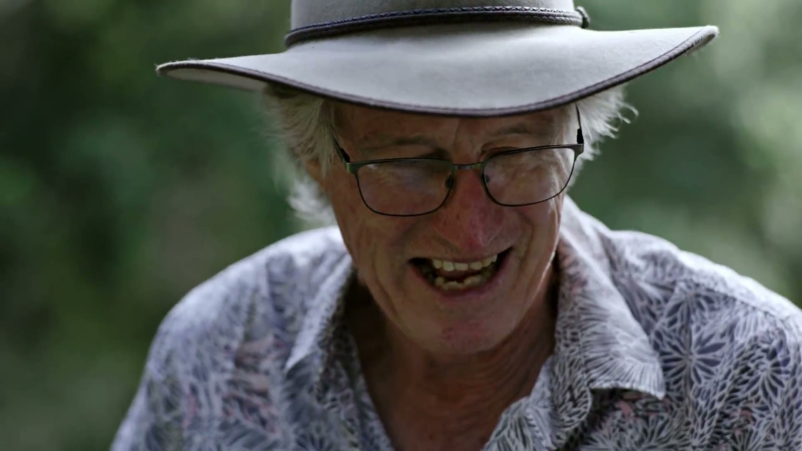

A conversation first.
What’s the story, who’s sharing it and who would you like it to reach? We’d talk through the brief and shape an approach together.

A selection for The Smith Family
Interview-led films, thoughtful motion and the production behind them. From Robin and the team at MONO.
A note from Robin
I’m Robin, a director and producer based in Sydney. I lead MONO, a small team that handles the edit, motion graphics and the post-production that brings everything together.
The Smith Family’s work connects students, families and supporters through education. I’d love to hear how you’re sharing those stories, and where I could be useful — especially with interviews and donor stories.
I’ve brought together a few films and some work from MONO below. They give you a feel for how I approach people and their stories, and how the team can support a project through to its final formats.
01 / Interviews & directing
Making room for people to speak in their own words. BMRG is a good place to start: interviews, time in the field and a story about why the work matters.
Burnett Mary Regional Group
Directing / producing / interviews / drone footage
A film about conservation on Queensland’s Mary River, bringing together scientists, Traditional Owners and landholders. I directed and produced the shoot, from the interviews to the drone footage. The focus was the people doing the work and why it matters to them.
About the project at BMRGFor donor interviews, I’d bring the same curiosity: what led someone to get involved, what they care about and what they want others to understand.
02 / Selected films
Three films from our work with Main Sequence and its portfolio companies. Interviews sit alongside footage of the people, places and work they’re talking about.
An interview-led film about the people and ideas across Main Sequence’s portfolio, moving between conversation and the work on the ground.
A company film pairing a founder interview with footage of the team and its navigation technology, giving the subject a clear human voice.
A founder profile filmed around NewEra’s team and laboratory. Conversation and observational footage bring the people behind the science into view.
03 / Main Sequence · Motion graphics
MONO’s motion work for Main Sequence uses typography, shapes and movement to explain its approach. A different way to make an idea easier to follow, alongside the films.
For The Smith Family, motion could support a story or help explain a program — with the message guiding the design.
04 / Sennheiser · Rollout work
A selection of MONO’s Sennheiser work, from campaign imagery and retail banners to product-film visuals. The rollout brings approved creative into the formats and channels where it needs to appear.
The same care carries through to a film’s cutdowns, social formats, presentation assets and final handover. MONO can support that work alongside the shoot.
More work at MONOWorking with The Smith Family
You’d work with me on the story and the shoot, with MONO supporting the post-production. We can work out together what the project needs.
What’s the story, who’s sharing it and who would you like it to reach? We’d talk through the brief and shape an approach together.
I direct and produce, from planning the shoot to sitting down for the interviews and capturing the moments around them.
MONO brings the edit, motion graphics and design together, then prepares the agreed versions and formats for delivery.
An introduction, from Robin
If any of the work feels useful, it’d be great to chat about the stories you’re looking to tell and where I could help.